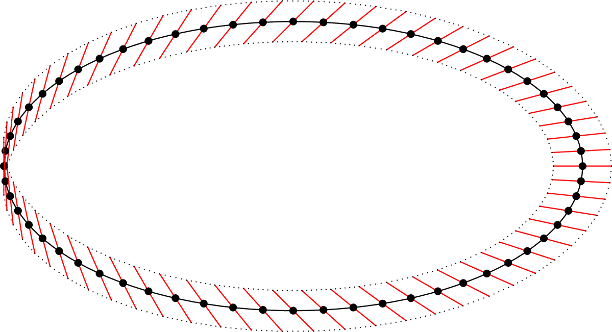

April 24th
Today I learned about line bundles. Like every bad definition, we begin by defining the more abstract term "vector bundle.'' Intuitively, this is associating a vector space to each point of a topological space.
Definition. A vector bundle consists of a topological space $X$ and total space $E$ with base field $K$ along with a continuous projection map $\pi$ such that $\pi^{-1}(\{x\})$ is a vector space for each $x\in X.$
Further, we require a coherence law in that, for each point $x\in X,$ there is an open set $U_x$ such that we can exhibit a dimension $d_x\in\NN$ and homeomorphism \[\varphi_x:U_x\times k^d\to\pi^{-1}(U).\] To make this a coherence law, we also ask that $\pi\circ\varphi_x:U_x\times k^d\to U$ to be the projection map, and for fixed $x'\in U_x,$ we want $v\mapsto\varphi_x(x',v)$ to be an isomorphism of vector spaces.
We have a couple quick remarks about this definition because there is a lot to unpack.
-
To make the intuition concrete, the vector bundle roughly sends $x\in X$ to $\pi^{-1}(\{x\}),$ associating the point to a vector space. The way we codified this intuition is to place everything in a huge space $E$ that localizes into vector spaces a points.
-
The coherence law is essentially supposed to make sure that the vector bundle outputs vector spaces that communicate with each other along the topology.
-
The homeomorphism $\varphi_x:U\times k^d\to\pi^{-1}(U)$ equips $k^d$ with a metric topology. Our base field should be $\RR$ or $\CC$ so that we actually have a topology to use here.
-
The linear map $\varphi_x(x')$ at the end is outputting into the vector space $\pi^{-1}(x').$ In particular, this follows from the fact $\pi\circ\varphi$ is supposed to project onto the $x'$ coordinate.
-
As long as $X$ is connected, the dimensions should all be the same.
In particular, find points $x_1$ and $x_2$ with open neighborhoods $U_1$ and $U_2$ with homeomorphisms $\varphi_1$ and $\varphi_2$ and dimensions $d_1$ and $d_2.$ If $x\in U_1\cap U_2,$ then \[k^{d_1}\stackrel{\varphi_1(x)}\cong\pi^{-1}(\{x\})\stackrel{\varphi_2(x)}\cong k^{d_2}.\] Thus, points with different corresponding dimensions have different neighborhoods, so the set of all points with dimension $d_\bullet$ is open and disjoint with the set of points with a different dimension; this divides $X$ into at least as many components as dimensions.
-
The above point is an example of the intuition that the coherence law roughly means that the vector bundle is "locally trivial'': at each individual neighborhood $U_x,$ the vector bundle very roughly acts like a constant isomorphism of vector spaces.
As an toy example, we can let $E=X\times k^d$ and then have $\pi$ be a literal projection. For each $x\in X,$ we can just choose $U_x=E,$ and $\varphi_x$ should be $\op{id}.$ Indeed, $\pi\circ\varphi_x:E\times k^d\to E$ is the projection mapping, and $v\mapsto\varphi_x(x',v)$ for some other $x'\in U_x$ is the constant isomorphism $k^d\cong k^d.$
With all of that talk about dimension earlier, the reader will be justifiably annoyed by the definition of a line bundle.
Definition. A line bundle over a topological space $X$ is a vector bundle with constant dimension $1.$
Again, we are intuitively associating a "line'' (i.e., a one-dimensional vector space) at each point of the topological space $X.$ So our line bundle needs to have all of the previous data, with the constraint that $d_x=1$ for each $x\in X.$
Here's a nontrivial example of a line bundle: the M\"obius strip.

Namely, we associate each point on the "axis'' of $S^1$ with its perpendicular line (in red) living in the M\"obius strip. To be explicit, we want to associate $(\cos\theta,\sin\theta)\in S^1$ with the line spanned by $(\cos\theta/2,\sin\theta/2),$ so we do this in the rudest way possible: set\[E=\bigcup_{\theta\in[0,2\pi)}\{\theta\}\times(\cos\theta/2,\sin\theta/2)\RR.\]Now the projection map $\pi$ simply collapses onto the first coordinate. In order to make this work out properly later, we make our topology on $E$ the roughest topology such that the mapping $\varphi:S^1\times\RR\to E$ by\[\varphi\big((\cos\theta,\sin\theta),r\big):=\big(\theta,(r\cos\theta/2,r\sin\theta/2)\big)\]is continuous. (Intuitively, spin a line around like a corkscrew.) Namely, $U\subseteq E$ is open if and only if $\varphi^{-1}(U)$ is open in $S^1\times\RR.$ We note that $\varphi$ is in fact a bijection: the inverse mapping is to read $\theta$ off the first coordinate and $r$ off the magnitude of the second coordinate.
Now, we note that for any $(\cos\theta,\sin\theta)\in S^1$ can take $\theta\in[0,2\pi)$ so that\[\pi^{-1}((\cos\theta,\sin\theta))=\{\theta\}\times(\cos\theta/2,\sin\theta/2)\RR,\]which inherits a vector space over $\RR$ from its second coordinate. Further, $\pi$ is continuous because, for $U$ open, $\pi^{-1}(U)$ consists of points found in the first coordinate of points in $\varphi^{-1}(U),$ so the openness of $\pi^{-1}(U)$ follows from the continuity of $\varphi$ (and the openness of $\varphi$'s projection map).
It remains to talk about the coherence law. We're not going to be terribly rigorous with this. Being as direct as possible, we make the necessary open cover $\{U_x\}_{x\in X}$ just consist of $S^1$ so that we have to define a single $\varphi:S^1\times\RR\to E$; we use the $\varphi$ from earlier.
Because $\varphi$ was used to define the topology on $E,$ I'm pretty sure we get that $\varphi$ is a homeomorphism for free after knowing it's bijective. Namely, it's continuous by construction, and while technically the sets $\varphi^{-1}(U)$ for $U\subseteq S^1\times\RR$ open merely form a subbasis, it is true that $\varphi^{-1}$ distributes over arbitrary union and finite intersection, so we should be fine.
Now we check the equations of the coherence law. We need $\pi\circ\varphi:S^1\times\RR\to S^1$ to be the projection, and indeed this follows by our definition of $\varphi$ and construction of total space $E.$ And lastly we require that, for fixed $x:=(\cos\theta,\sin\theta)\in S^1,$ the mapping\[r\mapsto\varphi(x,r)=\big(\theta,(r_0\cos\theta/2,r_0\sin\theta/2)\big)\]is an isomorphism of vector spaces. Indeed, these are both lines over $\RR.$